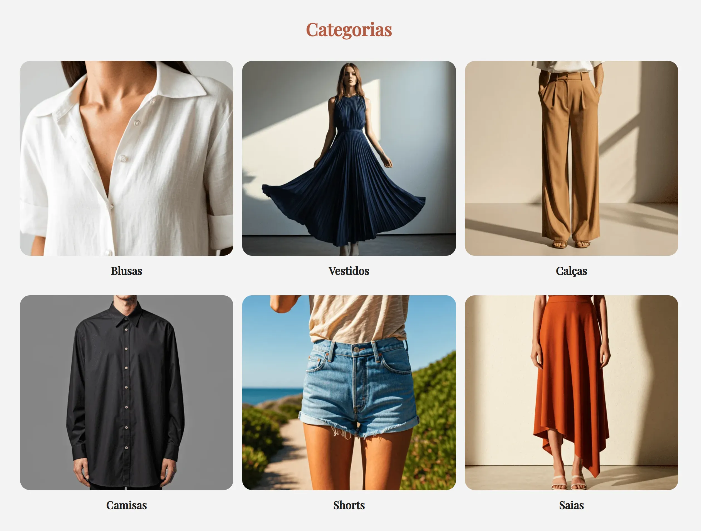
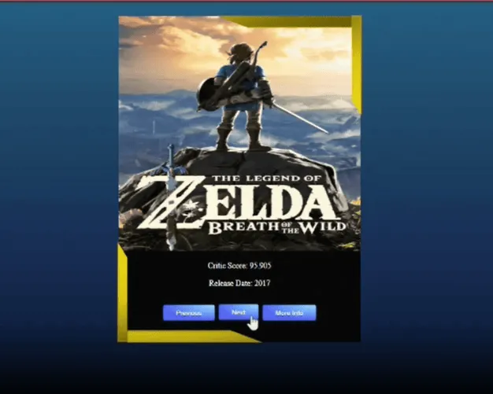
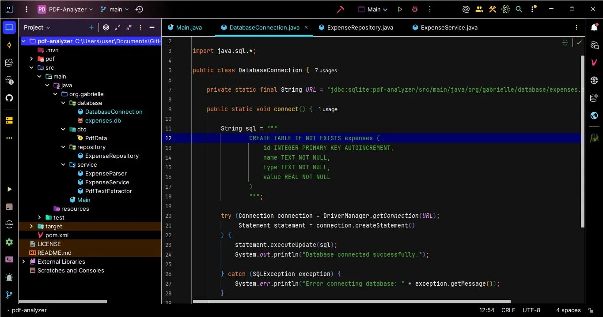

CÓDIGO
RESILIENTE
EM AMBIENTES
CAÓTICOS
Desenvolvo sistemas backend organizados, seguros e sustentáveis. Transformo regras de negócio em APIs estruturadas e soluções escaláveis.
0101010101010101
SYSTEM_STATUS: STABLE
BACKEND CORE
0101010101010101
PROJETOS
/ WORK_LOG.exe
INFRA_REBUILD_API
Sistema ecommerce com autenticação e regras de negócio.
OPEN_PROJECT →CORE_DATA_GATEWAY
API backend com gerenciamento de pedidos.
OPEN_PROJECT →
AUTH_PROTOCOL_SYSTEM
API modular com integração externa.
OPEN_PROJECT →
DATA_EXTRACTION_ENGINE
Aplicação Java para análise de documentos, extração de dados e armazenamento estruturado.
OPEN_PROJECT →TECNOLOGIAS
SYSTEM_STACK.v2.0PRIMARY_STACK
Java, Spring Boot, REST API, PostgreSQL, Docker
BACKEND & CORE
- Spring Security
- JWT
- JPA / Hibernate
- SOLID
- Clean Code
- Arquitetura
DATABASE_LAYER
- SQL
- H2
- MySQL
- Modelagem Relacional
INTEGRATIONS
- APIs Externas
- Google Calendar
- SMTP
- WebSocket
DEV_TOOLS
- Git
- GitHub
- Swagger
- Insomnia
- Postman
FRONTEND & CONSUMO
- HTML
- CSS
- JavaScript
- Angular
- TypeScript
SOBRE
IDENTITY_MODULEDesenvolvedora backend focada em arquitetura, segurança e boas práticas de engenharia. Meu objetivo é criar sistemas organizados, fáceis de manter e preparados para evoluir.
Onde o processo de desenvolvimento começa pela compreensão do problema e das regras de negócio, seguindo com definição da arquitetura, implementação, integração e testes. Garantindo uma qualidade e segurança completa durante todo o processo de construção de uma aplicação.
CORE_STACK
- Java / Spring Boot
- PostgreSQL
- Docker / Docker Compose
- APIs REST